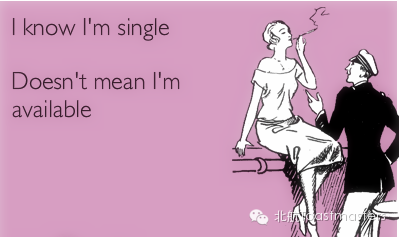
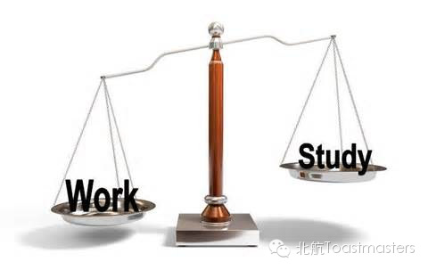
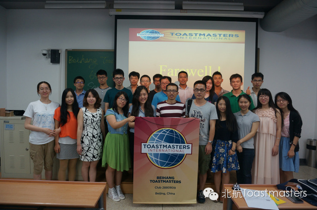
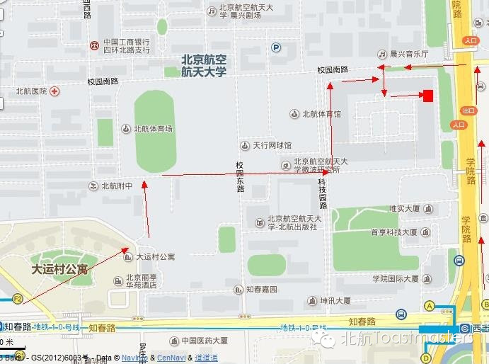

Beihang Toastmasters Club 65th Meeting
Why Still SAA?
Time: Friday Jun. 27th
19:30-21:30
Venue: Room A212, New Main Building, Beihang University
Toastmaster: Jocelyn
General evaluator: Peter
Table Topics
Table Topic Master: Keven
Table Topic Evaluator: Amanda

Single and available? Why still? Why are there 200million young people in China staying in this situation? When your friends are posting photos about their marriage parties or even their new born babies, are you still asked to have some blind dates? Why? Let's see how Keven will dig the truth out!
Prepared Speech
Man Propose, God Dispose
CC1 Cindy
We are having Cindy joined our club! Finally! She has been guests for several times in the last year, and some personal reasons stood in her way of having fun with us. And now, she comes back! We are looking forward to her first show in Beihang TMC! Come on, girl!
Prepared Speech
The Difference Between Work and Study
CC2 Courtney

June and July are the most departing months in one year, for many students will say goodbye to their student years and jump into the workforce. What will this group people meet? What's the difference between work and study? Let's see what Courtney will bring to us~
Initiation

In the last meeting, we said happy graduation to three members of our club. We are sure that the farewell means "see u later." This meeting, we will welcome three new members! They are Sophie, Cindy and Stan. They are hiding in this picture. Have no idea? Come and know who they are!
Installation
As a new term is coming, we will embracing a new officer team! Who are they? We will see! Also for the great contributions that have been made by the immediate past officers, many thanks to them!
Map
Our meeting venue is RoomA212, New Main Building, Beihang University (北航新主楼A212房间). Click here to see large map. And you can phone to Deron for help.
TEL: 180-0125-3933
See you in the meeting!

https://mp.weixin.qq.com/s/Rsct9CEchKUpPvuk-lOH0Q
本页为抢救式本地归档，图文已永久保存。